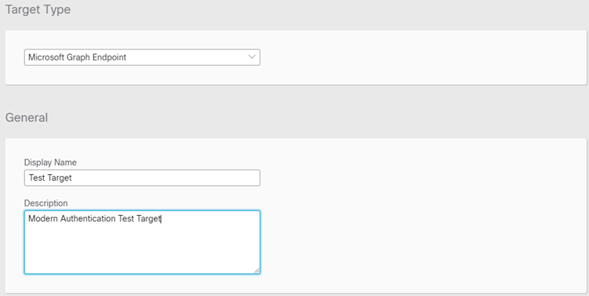

Microsoft Graph is the gateway to data and intelligence in Microsoft 365. It provides a unified programmability model that you can use to access the tremendous amount of data in Microsoft 365, Windows, and Enterprise Mobility + Security.
Orchestration uses Microsoft Graph Endpoint targets to monitor Outlook 365 inboxes via Email Events and send emails via Send Email workflow activities.
Microsoft Graph Endpoint targets require OAuth2 Microsoft Graph Credentials account keys and are used with
Perform the following steps to create Microsoft Graph Endpoint Targets:
Note: These steps assume that a user or application already exists in Azure Active Directory. If you do not have an app configured in Azure AD, you may need to contact your Azure AD administrator for assistance.
In the left navigation menu, click Targets.
Click New Target.
From the Target Type drop-down list, choose Microsoft Graph Endpoint.
Enter a unique display name for the target in the Display Name field and a brief description in the Description field.

In the Account Keys area, click the Default Account Keys drop-down list and choose an existing account key or choose Add New to create a new account key. For more information on creating an OAuth2 Microsoft Graph account key, see the Oauth2 Microsoft Graph Credentials Help topic.
Click Submit.
The new target will be the first in the list on the Targets page.